Machiawase とは
別々の所から来るふたりが、大きな駅の地下（改札・地下街・地下の店）で会うための Web アプリです。ふたりの出発駅・バス停（または乗ってくる電車）から、乗る電車・バス、ふたりがそろう時刻、ふたりにちょうどよい待ち合わせ場所を出し、ふたりの道順を立体図と手順で案内します。電車の遅れも反映します。あいてに QR コードで入力してもらい、あいてがどこまで進んでいるかも見られます。
紹介動画（約 2 分 40 秒）: YouTube で見る
対応している駅: 池袋 新宿 渋谷 東京 銀座（有楽町・日比谷）
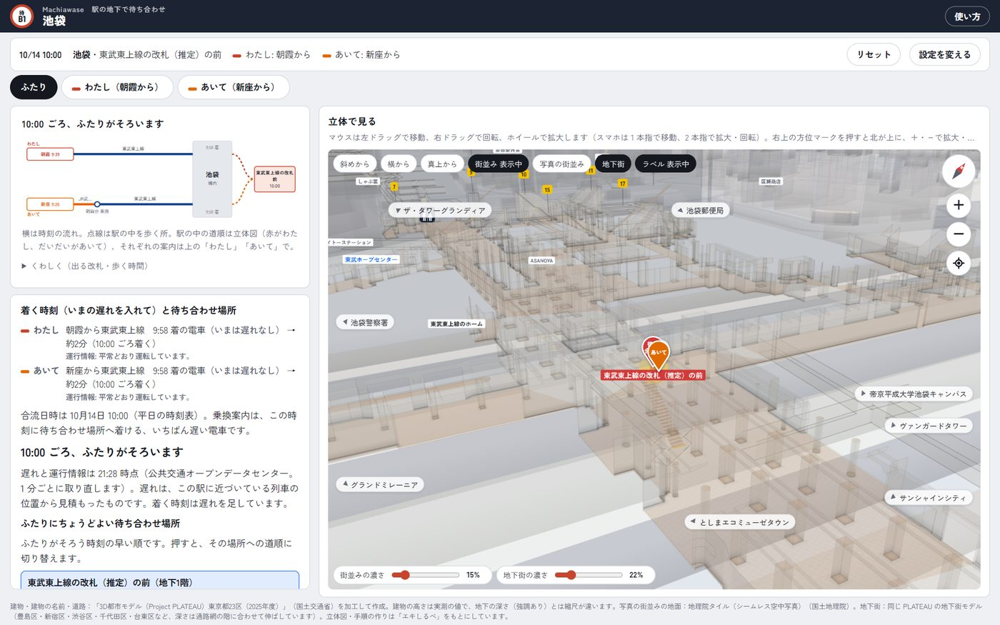
1ふたりの来かたを選ぶ
画面の上の設定は「待ち合わせ場所」「わたしの出発地」「あいての出発地」の 3 つのまとまりです。決めたら「設定を閉じる」で、1 行のまとめ（合流日時・待ち合わせ場所・ふたりの出発地）だけになります。変えるときは「設定を変える」を押します。「リセット」で、出発地（わたし・あいて）・待ち合わせ場所・合流日時・移動の条件を初めの状態に戻せます（駅はそのまま）。
- 「待ち合わせ場所」で、駅・場所・合流日時を選びます。場所は、立体図の改札・店などの札や建物の名前を押しても選べます。
- 出発地（わたし）で、自分の来かたを選びます。電車で来るときは「電車で着く」の中から、路線と方面（「丸ノ内線（荻窪方面から）」「JR山手線・外回り（目白の方から）」など）を選びます。地上の場所（ハチ公前・東京都庁前など）や出口から来るときは、その場所を選びます。
- 家の最寄り駅などから来るときは、「出発駅・バス停から乗り換えて来る」を選び（駅名・バス停名は、ひらがなでも探せます。候補には路線の色の札が出ます。時刻表の無い駅や、その日に便の無いバス停は「案内できません」と理由を出します）、出発駅（またはバス停）と合流日時を入れます。合流日時に待ち合わせ場所へ着ける、いちばん遅い電車・バスを探し、出る駅と時刻・乗り換える駅・降りる車両（進行方向の前から何両目あたりか）・出る改札を出します。電車の乗り換えは 2 回まで、バスの乗り換えは 1 回までです。
- 「電車で着く」を選んだときは、その下の欄で乗ってくる電車（この駅に着く時刻）を選びます。いまの 5 分前から 4 時間先までの電車が、時刻表の順に並びます。並んでいない時刻は「時刻を入れる…」で入れられます。
- あいての来かたを、あいてに入れてもらうこともできます。「あいての出発地」の来かたで「あいてに入力してもらう（QRコード）」を選び、出てきた QR コードかリンクをあいてに送ります。あいてが来かたを入れると、こちらの画面に数秒で出ます。
- あいての来かたで、あいての来かた・条件（標準／段差なし）・乗ってくる電車を同じように選びます。ひとりで道順だけ調べるときは「－」のままにします。
- 待ち合わせ場所を選びます（あとで、下の「ふたりにちょうどよい待ち合わせ場所」からも選べます）。改札・地下街・地下通路・カフェ・店などから選べます。
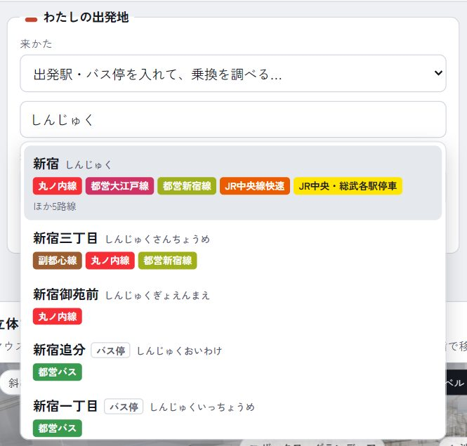
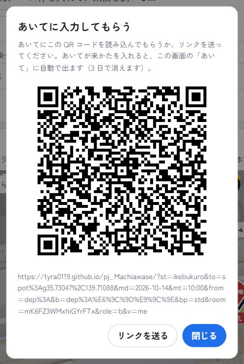
2ふたり・わたし・あいての画面
あいてを選ぶと、設定の下に「ふたり」「わたし」「あいて」の切り替えが出ます。
- ふたり: 「ふたりの流れ」の図に、ふたりの出発（駅・時刻）、乗る区間（路線の色の線）、乗り換え、着く駅、駅の中を歩く所（点線）、待ち合わせ場所とそろう時刻を横に並べます。見出しは「10:00 ごろ、ふたりがそろいます（あいてが約2分待つ）」。「くわしく」を開くと、出る改札・歩く時間の一覧も見られます。駅の中の道順は立体図に、わたし（赤）とあいて（だいだい）の 2 本で出します。
- わたし: わたしの電車（乗換案内）と歩く順番・立体図で、1 手順ずつ案内します。
- あいて: あいての電車と歩く順番・立体図を見るだけの画面です（案内開始のボタンはありません。手順を押すと立体図でその場所を見せます）。
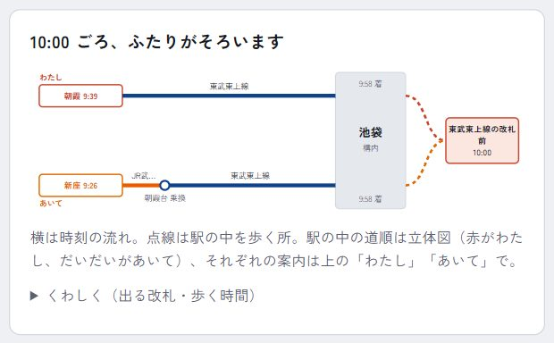
- あいてが出発地を入れる・変える → こちらの「あいて」の道順・着く時刻・ふたりがそろう時刻が変わります
- わたしが出発地を変える → あいての画面の「あいて」（わたし）も変わります
- 誘った人が待ち合わせ場所・時刻を変える → あいての画面に知らせが出て、あいての案内も作り直します
- 案内カードを進める → 相手の画面に「あいてはいま 3 / 7」が出ます
あいてがどこまで進んだか: 「あいてに入力してもらう（QRコード）」でつながっていると、あいてが案内カードを進めるたびに、あいての画面とふたりの画面に「あいてはいま 3 / 7：9:36 朝霞台で、東武東上線に乗る（1分前に案内を進めました）」と出ます。あいての画面では、その行に「いま」の印、立体図に青い「いま」のピンが出ます。つながっていないときや、あいてがまだ案内をはじめていないときは、合流日の当日なら時刻表から「予定では、北朝霞で乗り換えているころ」と見込みを出します。
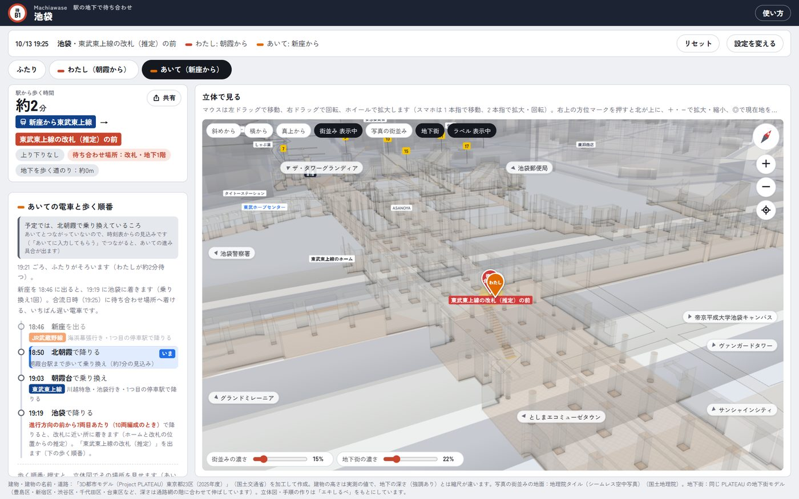
待ち合わせを変えたとき: 共有したあとに、誘った人が待ち合わせの駅・場所・日時を変えると、あいての画面の下に「あいてが待ち合わせを変えました」と、変わった所（前 → 新しい）が出ます。あいての案内も新しい待ち合わせで出し直します。
出口: 出口の番号は駅・地下街ごとに振られているので、この駅の出口は「6番出口」、ほかの駅・地下街の出口は「新宿サブナード 6番出口」「都庁前駅 A1番出口」のように、どこの出口かを添えて出します（選択肢も「この駅」と「ほかの駅・地下街」に分けています）。
案内の上の大きな「約◯分」は、出発地から待ち合わせ場所までの時間です。出発駅・バス停から乗るときは、出る時刻から待ち合わせ場所に着く時刻まで（電車・バス・乗り換え・歩く時間を合わせて）で、その横に「9:39 朝霞を出て、10:00 ごろ着く（うち駅から歩く約2分）」と出します。「電車で着く」を選んだときは、電車を降りてからの時間です。
3ふたりがそろう時刻と、ちょうどよい待ち合わせ場所
「ふたりの到着」の欄に、わたしとあいてが、それぞれ何時の電車で着いて、待ち合わせ場所まで何分歩き、何時ごろ着くかが出ます。その下に「21:34 ごろ、ふたりがそろいます（わたしが約3分待つ）」のように、ふたりがそろう時刻が出ます。
「ふたりにちょうどよい待ち合わせ場所」には、ふたりがそろう時刻のいちばん早い待ち合わせ場所が上から 5 つ並びます。それぞれ、わたしとあいての歩く時間と、そろう時刻が出ます。押すと、その場所への道順に切り替わります。
電車を降りてからの時間は、ホームから改札を出るまでの時間と、改札から待ち合わせ場所まで歩く時間を足したものです。JR の 4 駅（池袋・新宿・渋谷・東京）の JR の電車は、JR東日本の駅構内データで、着いた番線のホームから改札までを道順でたどった時間です。ほかは、駅のホームと改札の位置から見積もった時間です。
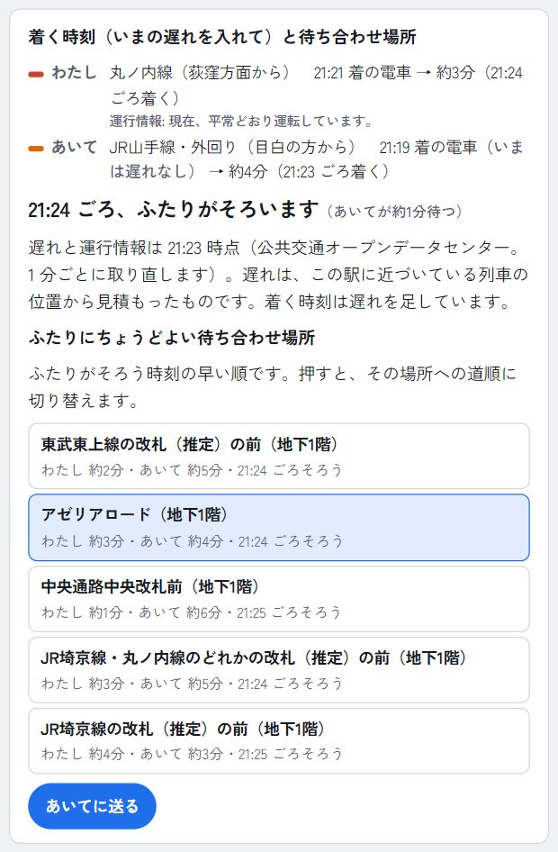
4遅れに合わせる
電車で来る人がいるときは、ODPT の列車の位置と運行情報を 1 分ごとに取り直します。選んだ電車がいま遅れていれば「（いま約3分遅れ）」と出し、その分だけ着く時刻とふたりがそろう時刻を遅らせます。運行情報の文（「平常どおり運転しています」など）も添え、平常でないときは赤で出します。
どちらかが 10 分以上待つときは、待ち合わせ場所から歩いて 4 分以内のカフェ・飲食の店を「ここで待つこともできます」と添えます。
5段差なしで待ち合わせる
車いすやベビーカーの人は、わたしは「移動の条件」で「エレベーターを使う（段差なし・車いす・ベビーカー）」、あいては「あいての来かた」の横の欄で「段差なし」を選びます。ふたりは別々の条件で調べられます。
- ちょうどよい待ち合わせ場所は、段差なしの人がエレベーターで行ける場所だけになります。
- 選んだ待ち合わせ場所に段差なしで行けないときは、そう出ます。下の候補から選んでください。
- 都営大江戸線の駅（新宿・新宿西口・都庁前）では、都営地下鉄の GTFS-Pathways から、ホームから改札までのエレベーターの道の時間を使います。JR の 4 駅の JR の電車は、JR東日本の駅構内データで、着いた番線のホームから改札までのエレベーターの道を案内します。ほかの駅は、エレベーターの位置がデータに無いので、時間は推定です。
- 待ち合わせ場所にいちばん近い車いす対応のトイレ（立体図のトイレのマーク）までの距離を出します。
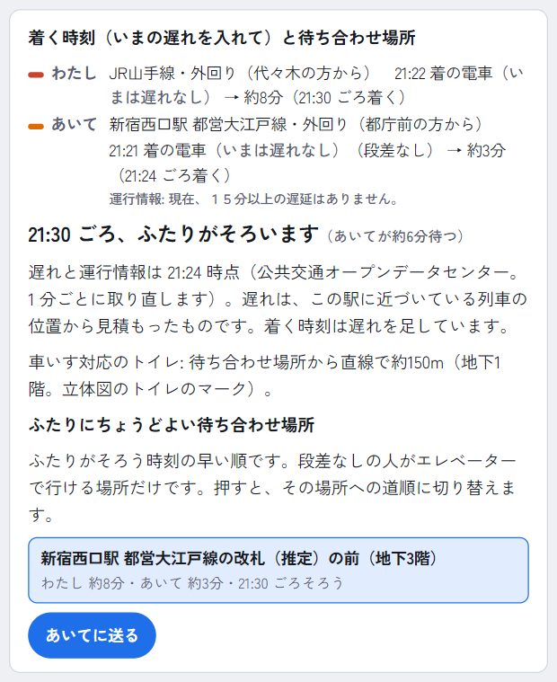
6あいてに送る
「ふたりの到着」の欄の「あいてに送る」を押すと、「21:34 ごろ、池袋駅の『アゼリアロード』で待ち合わせ。あなたは JR山手線・外回り（21:28 着）から約4分、わたしは丸ノ内線（21:30 着）から約3分です」のような文とリンクを送れます（スマートフォンは端末の共有、パソコンはコピー）。
リンクを開くと、あいての画面では初めにあいて自身の案内（あいてにとっての「わたし」）が出ます。「ふたり」に切り替えると、ふたりの流れも見られます。ふたりとも同じ待ち合わせ場所・同じそろう時刻を見ながら、それぞれの道順で向かえます。右上の「共有」は、いま見ている道順をそのまま送ります。
7道順の案内
「わたし」の画面の左に、電車と歩く順番が出ます。乗換案内で来るときは、出る駅と時刻・乗り換え・降りる駅（降りる車両）の下に、駅の中を歩く手順が続きます。歩く手順は、乗ってきた電車から始まります（「丸ノ内線（荻窪方面から）で着いて、中央通路中央改札を出る」）。JR の 4 駅の JR の電車は、来た方向の電車が止まる番線のホームから始まり、階段・エスカレーターを通って改札を出るまで案内します（「JR横須賀線・上り（新橋の方から）で着いて、総武地下 3番線ホームに降りる」→「上りエスカレーターで地下4階へ」→ … →「改札を出る」）。手順には「地上」「地下1階」の札が付きます。
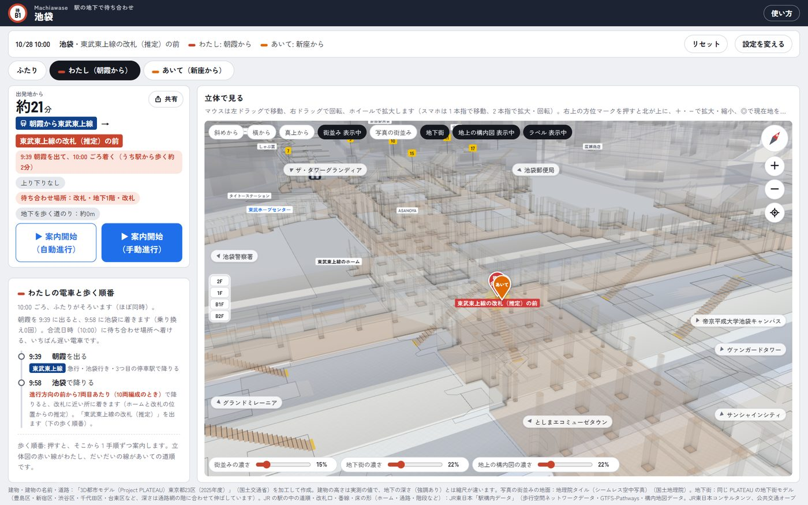
- 歩く手順の前に電車・バスのカードが出ます: 乗る（路線の帯の図）・乗り換える（乗り換えの図）・降りる（編成の図で、進行方向の前から何両目か）。カードのあいだ、立体図の場所に路線図（地理院地図の上に、乗る区間を路線の色で）が出ます。電車の行を押すと、そのカードから案内します。
- ▶ 案内開始（手動進行）: 1 手順ずつ「つぎへ」で進めます（キーボードの ← → でも）。移動中はこちらが便利です。
- ▶ 案内開始（自動進行）: 立体図の中を自動で歩き、手順の案内カードも進みます。止める・再開・続きからにも対応します。
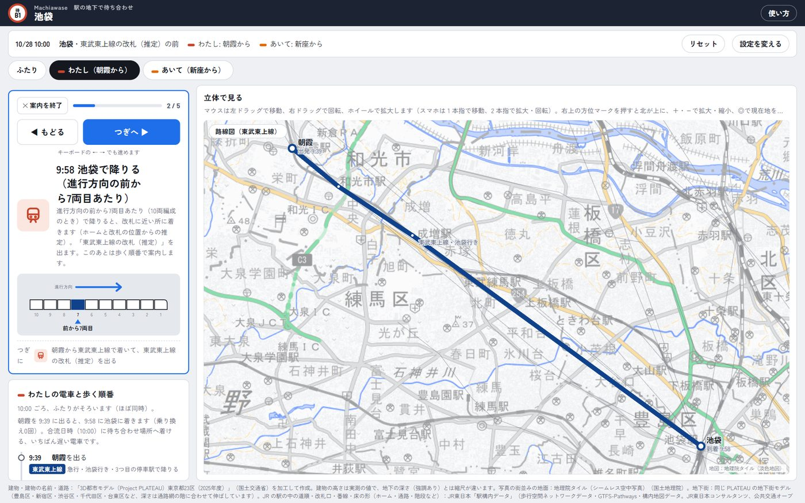
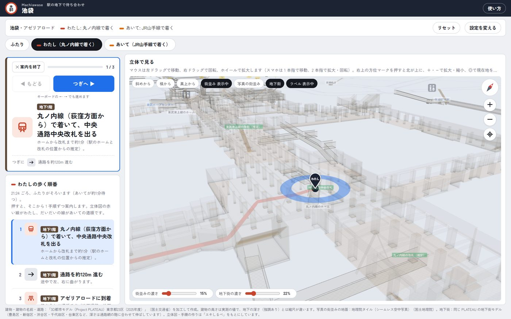
8立体で見る
立体図には、わたしの道順（赤）とあいての道順（だいだい）、出発・あいて・待ち合わせのピン、改札・地下街・店などの目印、トイレのマークが出ます。マウスは左ドラッグで移動、右ドラッグで回転、ホイールで拡大します。スマートフォンは 1 本指で移動、2 本指を広げる・狭めると拡大・縮小、2 本指をひねると回転（指のあいだを中心に）、2 本指のまま動かすと移動（1 本を離しても、残った指でそのまま動かせます）、横に並べた 2 本指をそろえて上下に動かすと傾きが変わります（Google マップと同じ）。
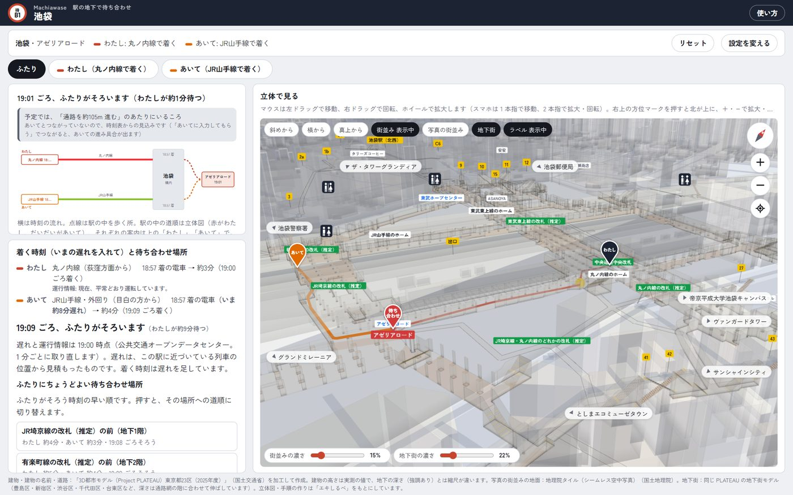
- 街並み: PLATEAU の建物（実測の高さ）と道路。「街並みの濃さ」で濃さを変えられます。
- 写真の街並み: PLATEAU の写真付きの建物と航空写真。地下街のある範囲に出します（データが多いので通信に注意）。
- 地下街: PLATEAU の地下街のモデル（床・壁・階段）。外から見るときは天井を描かず、「地下街の濃さ」で濃さを変えられます。
- 階のボタン（立体図の左の端の 2F・1F・B1F…）: 押した階だけを濃く出し、ほかの階を薄くします（札もその階のものだけ）。もう一度押すと全部の階に戻ります。経路の線とピンはいつも出ます。地下の階を選んでいるあいだは、地上の街並みを薄くします。
- 地上の構内図（池袋・新宿・渋谷・東京）: JR の構内地図のうち、地上・高架の階（ホーム・コンコースなど）の床。東京駅のように地上のホームの真下に地下街があるときは、消すか「地上の構内図の濃さ」で薄くすると、地下が見やすくなります。
- ラベル: 改札・地下街・店・建物の名前の札と、トイレのマークを出す・消す。スマートフォンで札が多くて見にくいときに消してください（出発・待ち合わせ場所・あいてのしるし、出口の番号、案内中の手順の札は残ります）。
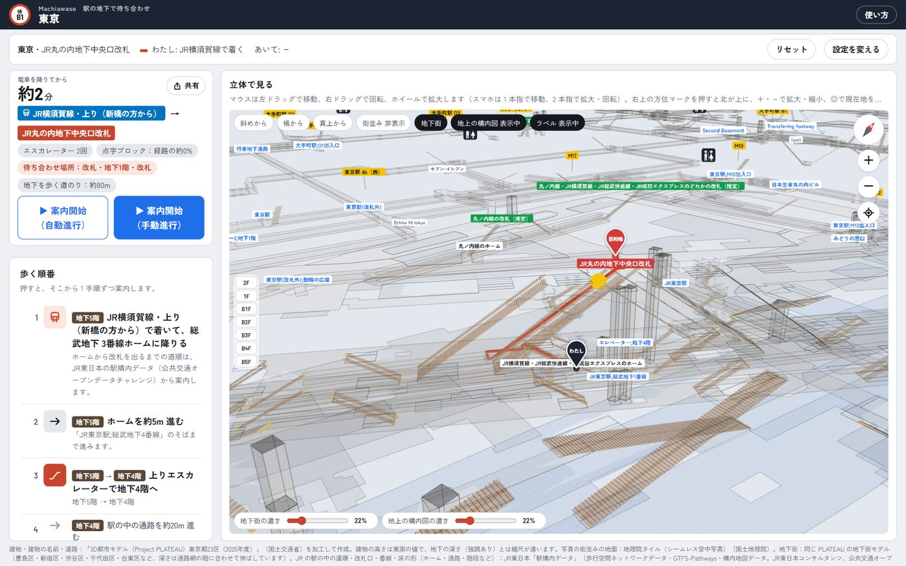
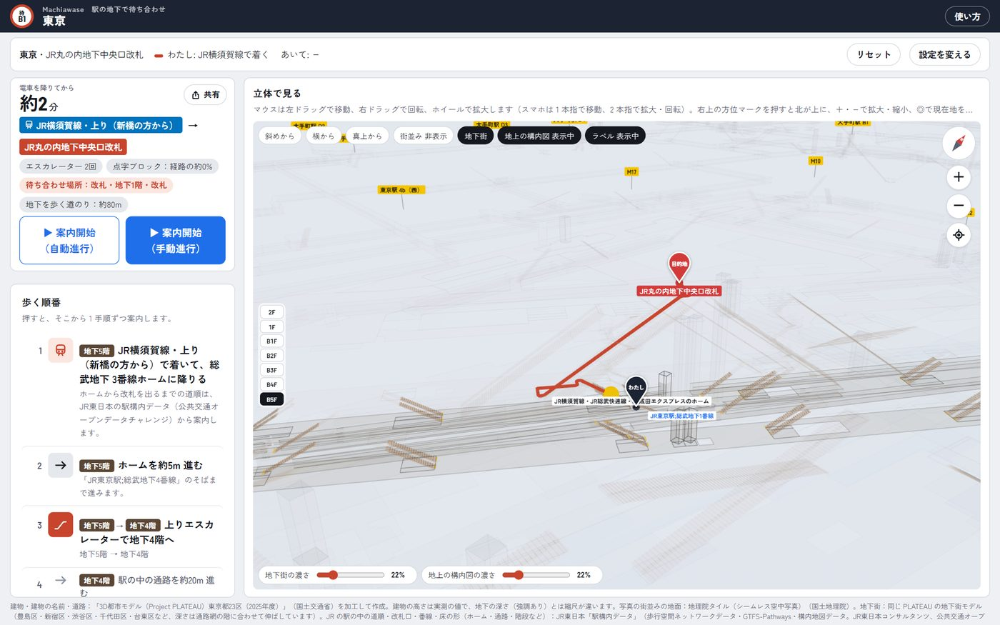
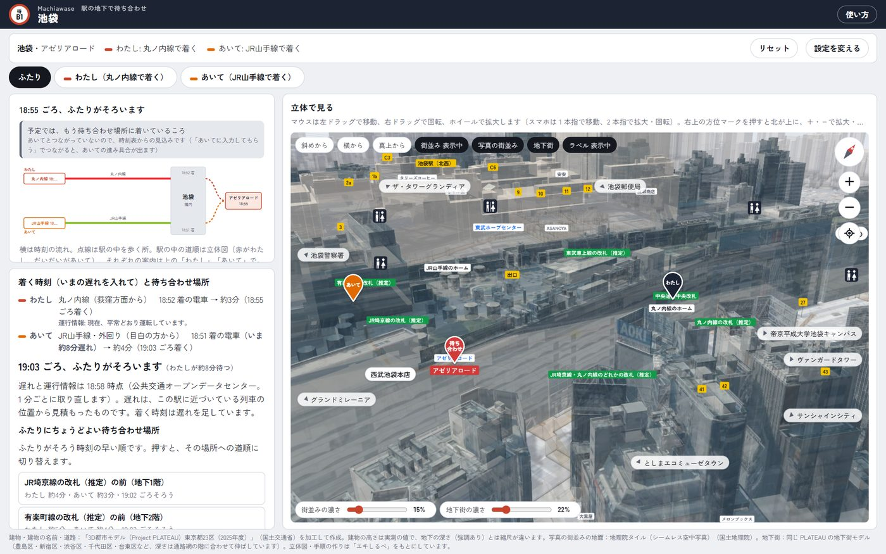
9スマートフォンで
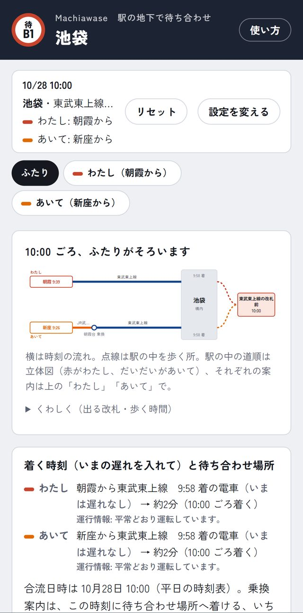
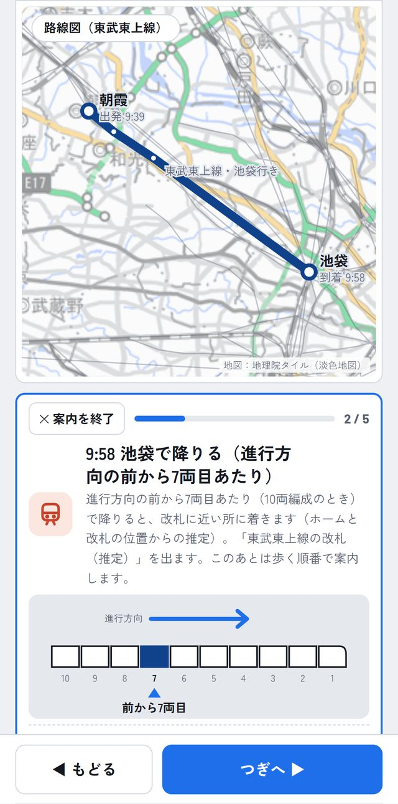
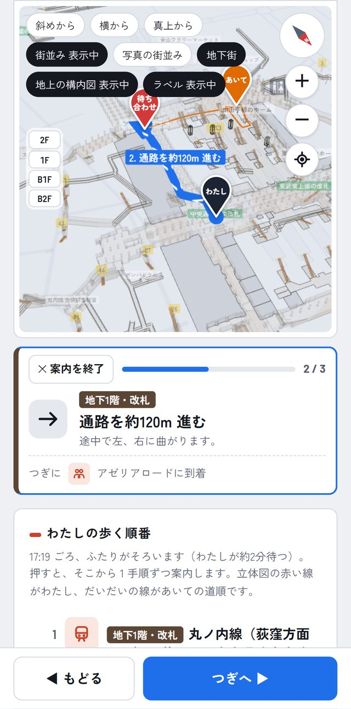
データと、その限界
- 乗換案内は、ODPT の列車時刻表（東京メトロ・都営地下鉄・JR東日本の関東の一部の在来線・東武・京王）と都営バスの時刻表から探します。西武・小田急・東急・京成と、都営バス以外のバスは時刻表が無いので使えません。乗り換えの歩く時間は駅・バス停の位置からの見込みです。降りる車両は、ホームの両端と改札の位置、路線のふつうの編成の長さから推定したものです。年末年始などの特別なダイヤや、ダイヤの改正は反映していません。
- ホームから改札までの時間は、駅のホームと改札の位置から見積もったものです。ただし、JR の 4 駅（池袋・新宿・渋谷・東京）の JR の電車は JR東日本の駅構内データの道順で、都営大江戸線の段差なしの道は都営地下鉄の GTFS-Pathways で出します。ほかの改札の中の通路のデータはありません。
- 改札の路線は、OpenStreetMap の改札機の位置と近いホームの路線から推定したものがあります（「（推定）」と書いています）。JR の 4 駅の JR の改札口（「JR丸の内地下中央口改札」など）は、JR東日本の駅構内データの名前と位置です。渋谷の新南改札など、改札の外の通路のデータが無い改札口は、待ち合わせ場所にしていません。
- 歩く道順は、改札機（OpenStreetMap の改札機の位置と、JR の 4 駅は JR東日本の駅構内データの改札）を通らない道を選びます（改札の中を通り抜けないように）。改札の中の店など、改札を通らないと行けない所へは、手順で「途中で改札機を通ります」と断ります。地図データに改札機の無い所は区別できません。
- 地上と地下は、出口の位置でつないでいます。地図データに線の無い所は近くの通路を推定でつなぎ、手順の文でそう断っています。
- 階の名前は、データ上の階（OpenStreetMap の level）を「地下N階」として付けたもので、駅の表示と一致しない場合があります。
使っているデータ
| 来かた・着く時刻・遅れ | 公共交通オープンデータセンター（ODPT）の駅・路線・方面・駅時刻表・列車時刻表・運行情報・列車ロケーション情報。東京メトロ（公共交通オープンデータ基本ライセンス）、東京都交通局（CC BY 4.0）、JR東日本・東武鉄道・西武鉄道・小田急電鉄・京王電鉄・東急電鉄（公共交通オープンデータチャレンジ限定ライセンス）。中継サーバを通して呼び、アクセストークンはページに置いていません |
|---|---|
| 乗換案内 | ODPT の列車時刻表（東京メトロ・東京都交通局・JR東日本・東武鉄道・京王電鉄。ライセンスは上と同じ）と、東京都交通局「都営バス GTFS」（公共交通オープンデータ協議会、CC BY 4.0） |
| JR の駅の中（ホームから改札） | JR東日本「駅構内データ」（歩行空間ネットワークデータ・GTFS-Pathways・構内地図データ。JR東日本コンサルタンツ、公共交通オープンデータチャレンジ限定ライセンス）。池袋・新宿・渋谷・東京の 4 駅。ホームから改札までの道順（階段・エスカレーター・エレベーター）、改札口の名前と位置、方向ごとの番線。立体図の、ホーム・駅の中の通路・階段などの床の形 |
| ホームから改札（段差なし） | 東京都交通局「鉄道関連情報（GTFS-Pathways）」（CC BY 4.0）。都営大江戸線の駅 |
| 地上の歩道 | 国土交通省「歩行空間ネットワークデータ」（池袋駅周辺・東京駅周辺・渋谷駅、千駄ヶ谷駅周辺／新宿駅周辺。政府標準利用規約 第2.0版） |
| 地下の通路・出口・改札・待ち合わせ場所・トイレ | © OpenStreetMap contributors（ODbL） |
| 建物・道路・地下街・写真の街並み | 「3D都市モデル（Project PLATEAU）東京都23区（2025年度）」（国土交通省）を加工して作成。写真の街並みの地面は地理院タイル（シームレス空中写真）（国土地理院）、地表の高さは国土地理院の標高 API とジオイド高 API |
| 電車・バスの路線図 | 地理院タイル（淡色地図）（国土地理院）の上に、ODPT・都営バスの駅・停留所の位置で描いています |
| 立体図・案内の作り | 「エキしるべ」（同じ作者の公共交通オープンデータチャレンジ2026 応募作品）をもとにしています |